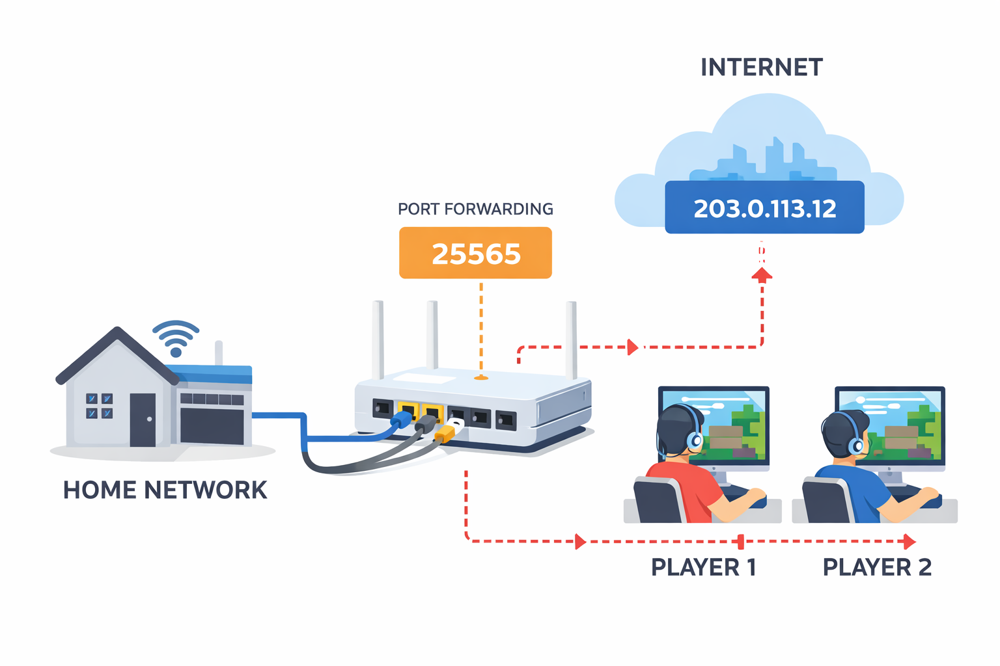

How to set up a Game Server
A step-by-step guide to creating your own multiplayer game server, from hardware setup to network configuration.

Setting up a game server allows you to host multiplayer games on your own system or a dedicated machine. The general setup process includes:
- Choosing the game server software
- Installing the server files on your machine
- Configuring server settings
- Forwarding required network ports
- Testing the server locally
Step 1: Install the Server Software
Download official server files from the game's website and install them locally.

Step 2: Configure Networking
Configure port forwarding so that outside players can reach your server (e.g., Minecraft port 25565).